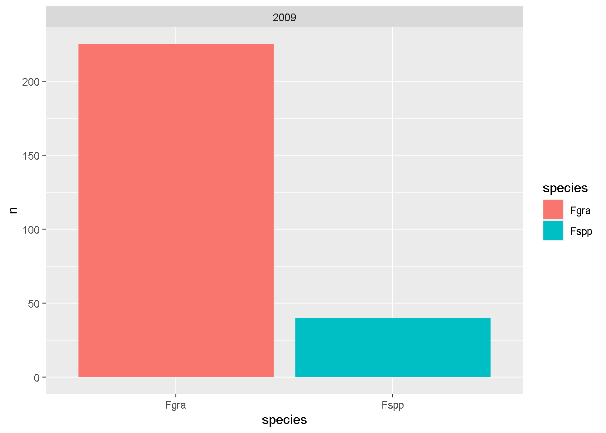
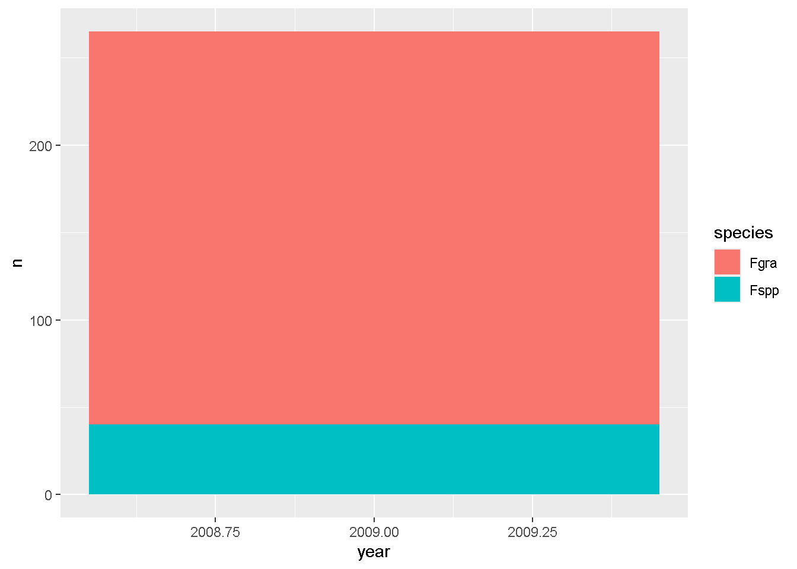
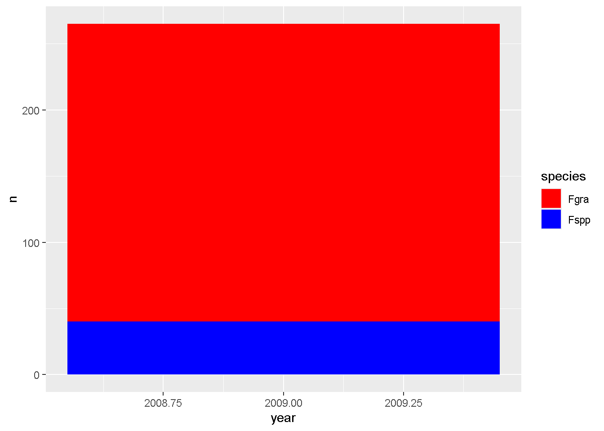

dados <- 1 + 1
print(dados)[1] 2# A função *print* funciona para colocar na tela a atribuição escolhidaR é uma linguagem de programação e ambiente de software especializado em computação estatística e gráficos. É uma linguagem de código aberto, voltada principalmente para análise estatística e visualização de dados.
Análise de dados experimentais
Testes estatísticos
Criação de gráficos profissionais
Manipulação de dados
Com a função de atribuição, é possível facilitar o uso de dados, codificando-os com uma string
Pacotes são complementos adicionais que propiciam funções novas ao R.
Para baixar e instalar deve-se utilizar as funções install.packages e library, da seguinte forma:
Carregando pacotes exigidos: dplyrWarning: package 'dplyr' was built under R version 4.3.3
Attaching package: 'dplyr'The following objects are masked from 'package:stats':
filter, lagThe following objects are masked from 'package:base':
intersect, setdiff, setequal, unionDatasets são basicamente conjuntos de dados, eles serão a base das análises
Há várias formas de importar datasets, seguem algumas:
Com isso conseguimos ler arquivos no formato .csv
Pacote para importar arquivos em .xlsx
Carregando pacotes exigidos: readxlWarning: package 'readxl' was built under R version 4.3.3library(readxl)
diversos <- read_excel("dados-diversos.xlsx")
# Selecionar uma tabela dentro do arquivo .xlsx
diversos2 <- read_excel("dados-diversos.xlsx",
sheet = "sensibilidade_fungicidas")New names:
• `` -> `...8`
• `` -> `...9`Pacote para importar diretamente do Google Sheets
Carregando pacotes exigidos: gsheetWarning: package 'gsheet' was built under R version 4.3.3library(gsheet)
dados_nuvem <- gsheet2tbl("docs.google.com/spreadsheets/u/1/d/1bq2N19DcZdtax2fQW9OHSGMR0X2__Z9T/edit?usp=sharing&ouid=114387405594168347966&rtpof=true&sd=true")
# Podemos selecionar um sheet específico utilizando sua url
survey <- gsheet2tbl("https://docs.google.com/spreadsheets/d/1bq2N19DcZdtax2fQW9OHSGMR0X2__Z9T/edit?gid=1118819738#gid=1118819738")Após importar os dados, podemos manipulá-los de diversas formas
O mais básico da manipulação de dados é a função de atribuir, porém temos muitas outras ferramentas para realizarmos essa atividade.
As variáveis de um dataframe são separadas em tipos, o que influencia diretamente nas análises.
Os tipos mais comuns utilizados no R são:
Armazenam números decimais (contínuos)
Exemplo: altura <- 1.75
Armazenam números inteiros
Exemplo: idade <- 30
Armazenam texto (strings)
Exemplo: nome <- "João Silva"
Armazenam valores TRUE (verdadeiro) ou FALSE (falso)
Exemplo: ativo <- TRUE
Representam variáveis categóricas (com níveis definidos)
Crucial para análises estatísticas
Exemplo: tratamento <- factor(c("A", "B", "A", "C"))
Todas as variáveis estão englobadas dentro da classificação estatística das variáveis.
Os quatro tipos são:
Contínuas: podem assumir qualquer valor num intervalo (ex: peso, altura)
Discretas: valores inteiros (ex: número de insetos)
Nominais: categorias sem ordem (ex: cor, sexo)
Ordinais: categorias com ordem (ex: nível educacional)
Estrutura tabular (como uma planilha)
Colunas podem ser de diferentes tipos
Exemplo: um objeto datacom colunas num (numeric) e local (character)
Coleção ordenada de objetos de qualquer tipo
Exemplo: minha_lista <- list(nome = "Ana", idade = 25, ativo = TRUE)
Primeiramente, deve-se identificar os tipos de variáveis presentes no dataframe
Para isso, utilizaremos a função *glimpse*, do pacote “dplyr”
if(!require(dplyr)) install.packages("dplyr")
library(dplyr)
diversos <- read_excel("dados-diversos.xlsx")
glimpse(diversos)Rows: 70
Columns: 5
$ Cultura <chr> "Rosa", "Rosa", "Rosa", "Rosa", "Rosa", "Rosa", "Rosa", "Ro…
$ rep <dbl> 21, 22, 23, 24, 25, 26, 27, 28, 29, 30, 31, 32, 33, 34, 35,…
$ Assess <dbl> 19.95, 4.77, 72.11, 81.37, 25.78, 80.45, 81.69, 7.02, 11.23…
$ LeafDoctor <dbl> 31.55, 13.53, 77.59, 90.83, 24.54, 73.84, 86.78, 14.04, 16.…
$ ImageJ <dbl> 26.04, 5.16, 69.46, 82.68, 13.13, 69.90, 88.66, 6.40, 10.82…Com os tipos de variáveis descritos, podemos modifica-los como bem entendermos
Podemos transformar as variáveis de um dataframe no tipo que quisermos, com funções básicas do R
Transformação em variáveis de caracteres
Rows: 70
Columns: 5
$ Cultura <chr> "Rosa", "Rosa", "Rosa", "Rosa", "Rosa", "Rosa", "Rosa", "Ro…
$ rep <dbl> 21, 22, 23, 24, 25, 26, 27, 28, 29, 30, 31, 32, 33, 34, 35,…
$ Assess <chr> "19.95", "4.77", "72.11", "81.37", "25.78", "80.45", "81.69…
$ LeafDoctor <dbl> 31.55, 13.53, 77.59, 90.83, 24.54, 73.84, 86.78, 14.04, 16.…
$ ImageJ <dbl> 26.04, 5.16, 69.46, 82.68, 13.13, 69.90, 88.66, 6.40, 10.82…Transformação em variáveis de numéricas inteiras
Rows: 70
Columns: 5
$ Cultura <chr> "Rosa", "Rosa", "Rosa", "Rosa", "Rosa", "Rosa", "Rosa", "Ro…
$ rep <dbl> 21, 22, 23, 24, 25, 26, 27, 28, 29, 30, 31, 32, 33, 34, 35,…
$ Assess <int> 19, 4, 72, 81, 25, 80, 81, 7, 11, 79, 34, 12, 65, 41, 84, 4…
$ LeafDoctor <dbl> 31.55, 13.53, 77.59, 90.83, 24.54, 73.84, 86.78, 14.04, 16.…
$ ImageJ <dbl> 26.04, 5.16, 69.46, 82.68, 13.13, 69.90, 88.66, 6.40, 10.82…Transformação em variáveis de fator
Rows: 70
Columns: 5
$ Cultura <chr> "Rosa", "Rosa", "Rosa", "Rosa", "Rosa", "Rosa", "Rosa", "Ro…
$ rep <dbl> 21, 22, 23, 24, 25, 26, 27, 28, 29, 30, 31, 32, 33, 34, 35,…
$ Assess <fct> 19, 4, 72, 81, 25, 80, 81, 7, 11, 79, 34, 12, 65, 41, 84, 4…
$ LeafDoctor <dbl> 31.55, 13.53, 77.59, 90.83, 24.54, 73.84, 86.78, 14.04, 16.…
$ ImageJ <dbl> 26.04, 5.16, 69.46, 82.68, 13.13, 69.90, 88.66, 6.40, 10.82…Transformação em variáveis lógicas
Rows: 70
Columns: 5
$ Cultura <chr> "Rosa", "Rosa", "Rosa", "Rosa", "Rosa", "Rosa", "Rosa", "Ro…
$ rep <dbl> 21, 22, 23, 24, 25, 26, 27, 28, 29, 30, 31, 32, 33, 34, 35,…
$ Assess <lgl> NA, NA, NA, NA, NA, NA, NA, NA, NA, NA, NA, NA, NA, NA, NA,…
$ LeafDoctor <dbl> 31.55, 13.53, 77.59, 90.83, 24.54, 73.84, 86.78, 14.04, 16.…
$ ImageJ <dbl> 26.04, 5.16, 69.46, 82.68, 13.13, 69.90, 88.66, 6.40, 10.82…Transformação em variáveis de numéricas com decimais
Rows: 70
Columns: 5
$ Cultura <chr> "Rosa", "Rosa", "Rosa", "Rosa", "Rosa", "Rosa", "Rosa", "Ro…
$ rep <dbl> 21, 22, 23, 24, 25, 26, 27, 28, 29, 30, 31, 32, 33, 34, 35,…
$ Assess <dbl> NA, NA, NA, NA, NA, NA, NA, NA, NA, NA, NA, NA, NA, NA, NA,…
$ LeafDoctor <dbl> 31.55, 13.53, 77.59, 90.83, 24.54, 73.84, 86.78, 14.04, 16.…
$ ImageJ <dbl> 26.04, 5.16, 69.46, 82.68, 13.13, 69.90, 88.66, 6.40, 10.82…Para facilitar as análises, ou levar o estudo para um caminho alternativo, podemos selecionar partes de dataframes
O pipe, representado pelo operador |> (ou %>%, em pacotes como o tidyverse), é um operador especial no R que permite encadear operações de forma mais legível e intuitiva.
O pipe pega o resultado da expressão à esquerda e usa como primeiro argumento da função à direita. Isso permite que o fluxo de trabalho seja mais dinâmico e prático.
# A tibble: 450 × 6
year state residue inc inc_class species
<dbl> <chr> <chr> <dbl> <chr> <chr>
1 2011 RS soybean 1 low Fgra
2 2011 RS soybean 1 low Fgra
3 2011 RS soybean 1 low Fgra
4 2011 RS soybean 1 low Fgra
5 2011 RS soybean 1 low Fgra
6 2011 RS soybean 1 low Fgra
7 2011 RS corn 1 low Fgra
8 2010 RS soybean 2 low Fspp
9 2010 RS corn 2 low Fgra
10 2011 RS soybean 2 low Fgra
# ℹ 440 more rows# A tibble: 216 × 6
year state residue inc inc_class species
<dbl> <chr> <chr> <dbl> <chr> <chr>
1 2009 PR <NA> NA <NA> Fgra
2 2009 PR <NA> NA <NA> Fgra
3 2009 PR <NA> NA <NA> Fgra
4 2009 PR <NA> NA <NA> Fgra
5 2009 PR <NA> NA <NA> Fgra
6 2009 PR <NA> NA <NA> Fgra
7 2009 PR <NA> NA <NA> Fgra
8 2009 PR <NA> NA <NA> Fgra
9 2009 PR <NA> NA <NA> Fgra
10 2009 PR <NA> NA <NA> Fgra
# ℹ 206 more rows# usando select e filter juntos
survey_b <- survey |>
select(year, state, species) |>
filter(year == "2009")
survey_b# A tibble: 265 × 3
year state species
<dbl> <chr> <chr>
1 2009 RS Fgra
2 2009 RS Fgra
3 2009 RS Fgra
4 2009 RS Fgra
5 2009 RS Fgra
6 2009 RS Fgra
7 2009 RS Fgra
8 2009 RS Fgra
9 2009 RS Fgra
10 2009 RS Fgra
# ℹ 255 more rowsPermite agrupamento em formato largo
Descrição: Ferramentas para limpeza e preparação de dados.
Uso: Simplifica a limpeza de nomes de colunas, checagem de duplicatas e criação de tabelas de frequência.
Carregando pacotes exigidos: janitorWarning: package 'janitor' was built under R version 4.3.3
Attaching package: 'janitor'The following objects are masked from 'package:stats':
chisq.test, fisher.test state Fgra Fspp
PR 92 31
RS 133 9 year Fgra Fspp
2009 225 40Criar gráfico a partir de tabela
Descrição: Cria gráficos elegantes baseados na gramática dos gráficos.
Uso: Visualizações de dados personalizadas com camadas.
Carregando pacotes exigidos: ggplot2library(ggplot2)
survey_b |>
group_by(year, species) |>
count() |>
ggplot(aes(species, n, fill = species)) +
geom_col() +
facet_wrap(~year)
survey_b |>
group_by(year, species) |>
count() |>
ggplot(aes(year, n, fill = species)) +
geom_bar(stat = "identity")
Os gráficos podem ser modificados manualmente pelo ggplot2
survey_b |>
group_by(year, species) |>
count() |>
ggplot(aes(year, n, fill = species)) +
geom_col() +
scale_fill_manual(values = c("red", "blue"))
O pacote ggplot2 será descrito de forma mais detalhada em capítulos posteriores
Transformar dados da planilha para formato largo (mais prático para realziar as análises)
Descrição: Ferramentas para organização e estruturação de dados. Uso: Transforma dados entre formatos “wide” (amplo) e “long” (longo), trata valores ausentes e aninhados.
Carregando pacotes exigidos: tidyrWarning: package 'tidyr' was built under R version 4.3.3library(tidyr)
mg<- read_excel("dados-diversos.xlsx",
sheet = "magnesio")
mg2 <- mg |>
pivot_wider(names_from = trat, values_from = comp) |>
select(-rep)
glimpse(mg2)Rows: 10
Columns: 2
$ Mg2 <dbl> 9.0, 12.5, 10.0, 8.0, 13.2, 11.0, 10.8, 9.5, 10.8, 10.4
$ control <dbl> 13.72, 15.91, 15.70, 14.20, 15.90, 16.54, 18.00, 14.40, 16.41,…# A tibble: 10 × 2
Mg2 control
<dbl> <dbl>
1 9 13.7
2 12.5 15.9
3 10 15.7
4 8 14.2
5 13.2 15.9
6 11 16.5
7 10.8 18
8 9.5 14.4
9 10.8 16.4
10 10.4 16